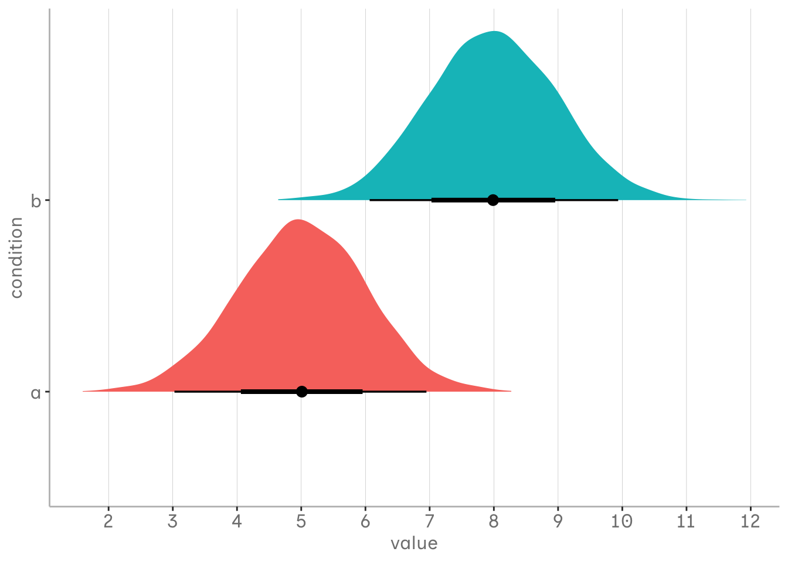
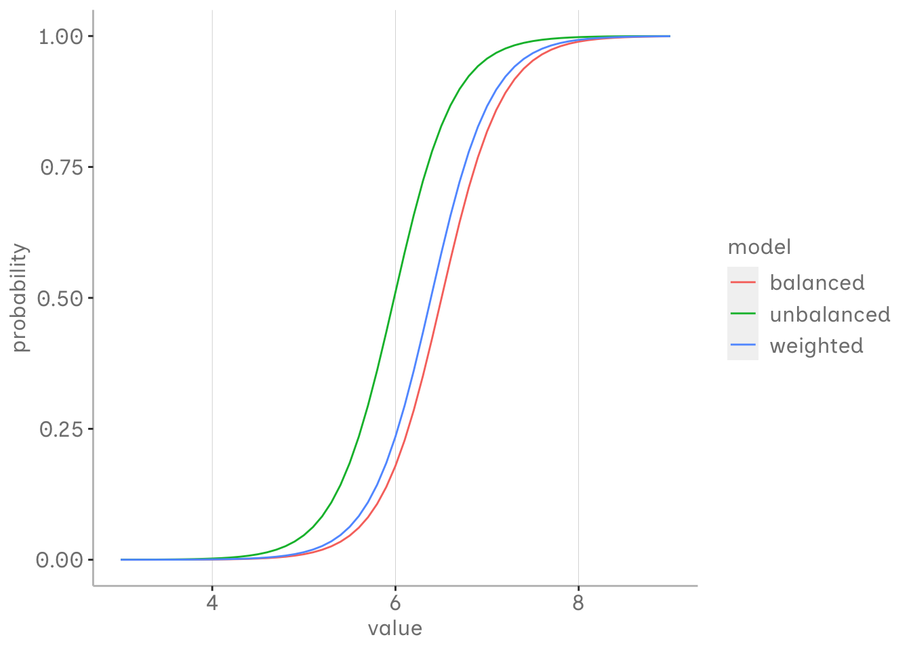

Exploring frequency weights in logistic regression
R
modelling
Frequency weights can be used in logistic regression to address class imbalance caused by sampling bias. In this post, we will use simulations to explore how to effectively choose weights and visually understand the benefits of this approach.
Published
June 4, 2024
In logistic regression, we estimate a linear model for the log odds of observing an event at different levels of our predictor. These log odds can be transformed into probabilities, which then produce the characteristic S-curve.
In essence, it all comes down to odds. Having odds of 1:1 in our underlying data generation process means that both events are equally likely to occur, each with a probability of 50%. Our fictional population for the simulation follows this setup, with the probabilities of our events depending on values from normal distributions for both groups, with means of 5 and 8 and standard deviations of 1.
library(tidyverse) a <-tibble(value =rnorm(4000, 5, 1), condition ="a") b <-tibble(value =rnorm(4000, 8, 1), condition ="b") df_ab <-bind_rows(a, b)df_ab %>%ggplot(aes(x = value, y = condition, fill = condition))+ ggdist::stat_halfeye()+scale_x_continuous(breaks =seq(1,12,1))+blog_theme()+guides(fill ="none")

Simulating imbalance
To get an idea of how frequency weights affect the logistic regression results, we will generate some simulations from our fictitious population under different conditions. Each simulation will consist of 400 samples, with each N = 400 values drawn from our population.
Balanced dataset: Each sample will have a 1:1 ratio of our two classes and represent the proportions in the population.
Unbalanced dataset: Each sample will have a 1:4 ratio, representing an imbalance between the classes caused by some sort of sampling bias, where where one group is underrepresented in the sample, compared to the population.
Weighted unbalanced dataset: Similar to the unbalanced dataset, but here each observation in the underrepresented class is given a weight of 4 to counteract the imbalance.
For each sample under these conditions we will run a logistic regression using the logistic_sim function on each sample.
We will then compute the median of the estimated parameters (e.g. coefficients and intercepts) from each condition in order to obtain a robust measure of central tendency.
Finally, we will aggregate these median parameter estimates across all conditions into a single logistic regression model for each condition.
logistic_sim <-function(sample_n, a_n, b_n, a_mean =5, b_mean =8, a_std =1, b_std =1, weight =1){map(1:sample_n, ~ {# Create samples for conditions a and b a <-tibble(value =rnorm(a_n, a_mean, a_std), condition =0) b <-tibble(value =rnorm(b_n, b_mean, b_std), condition =1) df_ab <-bind_rows(a, b)# Adjust weights if the argument is given and not 1 if (weight !=1){ df_ab <- df_ab %>%mutate(weights =ifelse(condition ==0, weight, 1)) }return(df_ab) }) %>%imap(~ {if (weight !=1) {# Fit model with weights model <-glm(condition ~ value, family = binomial, data = .x, weights = .x$weights) } else {# Fit model without weights model <-glm(condition ~ value, family = binomial, data = .x) }# Tidy and return the model coefficients with iteration number broom::tidy(model) %>%select(term, estimate) %>%mutate(iteration = .y) }) %>%bind_rows() %>%pivot_wider(names_from = term, values_from = estimate) %>%rename(alpha =`(Intercept)`, beta = value)}
As we can see, the unbalanced model underestimates the first group compared to the balanced model. It seems that the intercept is particularly affected, while the slope is relatively similar. However, all the estimated probabilities are affected.
Assuming that our balanced model is the closest estimate we can get of our population, the unbalanced model that used weights seems to be better fitted. Assuming that our two events are generally equally likely to occur in our population, but our sample is biased, we might be interested in adjusting these estimates using frequency weights.
bind_rows(balanced_estimates, unbalanced_estimates, weighted_estimates) %>%group_by(model) %>%summarise(alpha.median =median(alpha),beta.median =median(beta)) %>%mutate(x =list(seq(3,9,.1))) %>%unnest(x) %>%mutate(y = boot::inv.logit(alpha.median + beta.median * x)) %>%ggplot(aes(x = x, y = y, col = model))+geom_line()+xlab("value")+ylab("probability")+blog_theme()

Relationship between odds and weights
But how do we determine an appropriate frequency weight?
To explore this, we experiment with all possible combinations of odds and weights from 1 to 20 in our fictional population. Again, we use the logistic_sim function to estimate our median parameters under each combination.
Evaluating parameter estimates for different odds and weights
We can evaluate the performance of each model by looking at the median error at different values of our variable of interest - the mean of the two groups and the midpoint between these means. As you can see in the graph, at the critical value of 6.5, the median error tends to decrease up to a certain weight threshold, after which it increases again. So even in such a simple example, weights only help to a certain extent and must be used with caution.
The threshold with the most balanced estimates seems to be closely related to the odds ratio. Thus, choosing the assumed imbalance of the odds as the weight may be the most appropriate, especially for smaller imbalances. At least in our simple setup. However, deviations for higher imbalances may also be due to the uncertainty of the estimates as the sample size for the minority group decreases. As the odds increase, almost any weight seems to produce more appropriate estimates than the unbalanced model where we did not adjust for sampling bias.
Depending on the scenario, weights may be helpful to deal with sampling bias and class imbalance that does not reflect the population (at least in a simple setup, like the one we worked with). However, they should be used with prior knowledge of the population to not overadjust the sampling bias. One solution might be to adjust the observed odds by the expected odds ratio in the population, in the group affected by the sampling bias. The natural class imbalance should also be maintained in the logistic regression unless you have good reasons not to.